Poster Guide
Poster Guide Contents
Jump directly to any poster section.
The Poster is 30% of your capstone Grade, so 18% of your whole Grade (30% x 60), and it is composed of 10 different sections which in consecutive order are “Abstract” “Introduction” “materials and methods” “results” “analysis” “conclusion” “recommendations” “Literature Cited” “Acknowledgement (Optional)” and “For further information (Optional)”.
الـ Poster بيمثّل 30% من درجة الـ Capstone بتاعتك، يعني 18% من درجتك الكلية (30% × 60)، والـPoster متكوّن من 10 أجزاء مختلفة، بالترتيب: “Abstract” و“Introduction” و“materials and methods” و“results” و“analysis” و“conclusion” و“recommendations” و“Literature Cited” و“Acknowledgement (Optional)” و“For further information (Optional)”.
Layout and Formatting:
The poster’s dimensions should be 110cm x 80cm and it should have a standard layout that looks like this:
مقاس الـ Poster 110 سم × 80 سم و دة الشكل المعتاد ليكم:
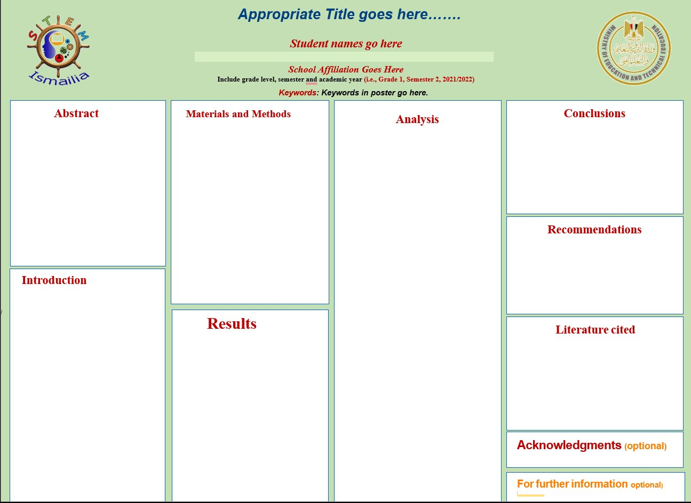
While some other posters may have a less standard format like this:
و في بوسترات بيخرجوا عن الأطار المعتاد:
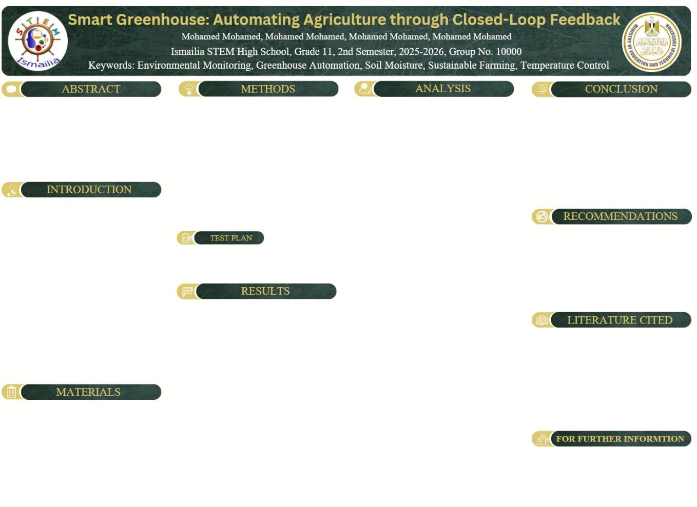
In the second example, the materials and methods were split into two sections to provide them and the results with more space; in addition, the “Acknowledgements” section was removed.
Now, despite these changes being okay and harmless, some ground rules cannot be messed with: the analysis must be in the third column alone.
في المثال دة، اتقسم جزء الـmaterials and methods لقسمين عشان ندي مساحة أكبر لكل من الـ materials and methods والـresults؛ وكمان اتشال قسم “Acknowledgements”.
التغييرات دي عادي ومفيهاش أي مشكلة، لكن في شوية قواعد أساسية مينفعش نغيّر فيها: الـanalysis لازم يكون في الـcolumn التالت لوحده.
A few ground rules:
In-text citations to numbers, facts, prior solutions, laws in the analysis, etc., should be applied in APA 7 format just like the portfolio.
Body text should be large enough to be easily readable from a distance of one meter. As a general rule, I recommend never using a font size smaller than 16 pt.
الـBody Text لازم يكون حجمه كبير كفاية إنه يتقري بسهولة من مسافة متقلش عن متر و عامة تستخدمش Font Size أقل من 16
All pictures should be labeled as Figures and numbered according to their order of appearance. Each figure should also be referenced in the text, as shown in the example.
الصور بتتسمّى Figures وتتّرقم حسب ترتيب ظهورها في الـPoster. ولازم كمان يتم الإشارة لكل Figure جوّه الـText،.
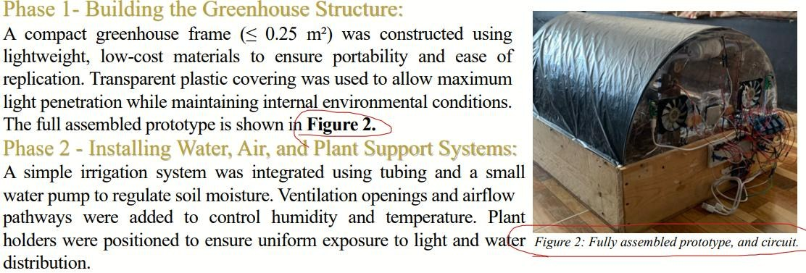
Tables should also be labeled and numbered according to their order of appearance, as shown in the example. Additionally, many evaluators pointed out that the table's label should be written above the table rather than below it—in contrast to figures whose labels are below.
الـجداول برضه لازم تتسمّى وتتّرقم حسب ترتيب ظهورها.
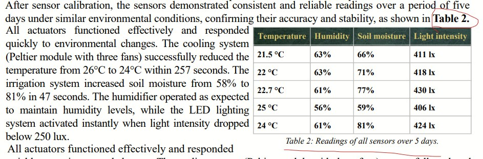
Note: Graphs are considered Figures, so they do not have a separate naming or numbering system.
ملاحظة: الـGraphs بتعتبر Figures، وبالتالي ملهاش نظام تسمية أو ترقيم منفصل.
Abstract:
The Abstract is a brief summary of the entire work presented in the poster. It should be understandable on its own, without requiring the reader to read the entire poster whilst also grab the attention of the reader with a strong hook.
الـAbstract هو ملخص مختصر لكل الشغل اللي متقدم في الـPoster. ولازم يكون مفهوم لوحده، من غير ما القارئ يكون محتاج يقرأ الـPoster كله عشان يفهمه و مع ذلك تحفزه و تشده انه يقرا و يبقى مهتم.
It has the following structure: Purpose → What was done → Major Findings → Major Conclusions.
It should achieve the following sections:
1- Purpose of the Study: “Why was this done?”
Start by explaining the main goal of the project and the problem you were trying to solve.
هتشرح الهدف الأساسي للمشروع و المشاكل اللي بيحاول يحلها
Example: The project aimed to develop a sustainable energy solution using renewable resources.
2- What Was Done: “What was actually done?”
Briefly explain what you designed, built, tested, or investigated. Do not include small details or step-by-step procedures. The reader only needs to understand the general approach.
اشرح باختصار إنت صممت أو بنيت أو اختبرت أو درست إيه. متدخلش في التفاصيل الصغيرة أو خطوات التنفيذ واحدة واحدة. القارئ محتاج بس يفهم الفكرة العامة والطريقة اللي اشتغلتوا بيها.
Example:
“A prototype was designed, constructed, and tested combining hydroelectric and thermoelectric systems.”
3- Major Findings “What was found?”
State the most important results of the project. Focus on the findings that actually matter to the project's goal rather than listing every measurement or result.
اذكر النتائج بتاعت المشروع. ركّز على النتائج اللي فعلاً ليها علاقة بهدف المشروع ومهمة بالنسبة له، بدل ما تهري في كل القياسات أو كل النتائج اللي طلعت.
Example:
The system successfully generated electricity from both water flow and a temperature difference, with the hydroelectric component providing the majority of the power.
4- Major Conclusions “So what does this mean?”
Explain what the results tell you and what the overall outcome of the project was. You can also briefly mention the potential application or significance of the solution. If the project has a large-scale version, you should talk about it and its real-life location in this section.
شرح النتائج، وإيه النتيجة النهائية أو الـoverall outcome للمشروع. ممكن كمان تذكر باختصار استخدام الحل المقترح أو أهميته في علي أرض الواقع.
لو المشروع ليه نسخة كبيرة أو تطبيق على نطاق واسع، لازم تتكلم عنها هنا وتذكر مكانها الحقيقي في ارض الواقع
Example:
The results suggest that the system could provide a continuous and scalable energy solution for off-grid locations such as Toska Lake.
The Abstract should make sense by itself.
A person should not need to read the Introduction, Methods, Results, or Conclusion first to understand what the project was about and what happened.
It should be brief and informative, not detailed. The Abstract is a summary of the poster, not a mini version of every section. I recommend you don’t surpass 250 words, but there is no hard limit.
الـAbstract لازم يكون مفهوم لوحده.
يعني الشخص مش المفروض يكون محتاج يقرأ الـIntroduction أو الـMethods أو الـResults أو الـConclusion الأول عشان يفهم المشروع كان عن إيه وإيه اللي حصل فيه.
لازم يكون مختصر ومفيد، مش مليان تفاصيل. الـAbstract هو ملخص للـPoster كله، مش نسخة مصغّرة من كل Section. حاول متعديش ال 250 كلمة, هو مفيش limit, بس منصحش تزود عن كدة
We recommend writing the abstract after laying out the structure of most of the poster or having all of the content ready. This is because the abstract is practically a summarization of most sections in the poster.
Now here is an example of a whole abstract:
"The purpose of this study is to address Egypt’s Grand Challenges of increasing the industrial and agricultural base, pollution reduction, dealing with population growth, and waste recycling by developing a function. Our solution is a smart farming that aims to automate Agriculture through a Closed-Loop Feedback that makes use of sensors and actuators that respond to deviations. To achieve this, we designed, constructed, and tested a greenhouse that can run uninterrupted by human intervention while maintaining optimal growth conditions for the selected plant species, mushrooms, for more than 6 hours.
The prototype was engineered to meet design requirements, including a quick actuator response, accurate sensor readings, portability, low cost, and the ability to display and visualize data while providing real-time monitoring. Testing included running the prototype for prolonged periods, measuring the area of the growing area, obtaining accurate sensor readings, while maintaining low power consumption.
Major findings through our analysis showed that the prototype can run without human intervention for 6 hours straight, allowing the mushroom to fully sprout. The sensors showed accurate readings over the course of 5 days, while the actuators showed a quick response to deviations. An HTML website is used to display that information on any device.
In conclusion, this project shows how smart greenhouses can increase the industrial and agricultural base of countries, allowing for better environmental and economic conditions, while providing higher crop yields and reducing waste by investing recycled materials into building the greenhouses. "
Introduction:
The Introduction explains the problem your project is trying to solve, why that problem matters, what has already been done about it, and why your team chose its particular solution.
To write it follow this sequence:
Grand challenges (2-3) → Problem to be solved → Prior solutions (2)→ Design requirements → Selection of solution → (Optional) Transition to materials and methods
الـIntroduction بيشرح المشكلة اللي مشروعك بيحاول يحلها، وليه المشكلة دي مهمة، وإيه اللي اتعمل قبل كده عشان يحلها، وليه فريقك اختار الحل بتاعه بالذات.
ولكتابة الـIntroduction، امشوا بالترتيب اللي مكتوب فوق
1. Grand Challenges
In this section, explain the issues Egypt faces that are relevant to your project. Do this by mentioning the Grand Challenges you selected and discussed previously in your portfolio.
اشرح المشاكل اللي مصر بتواجهها واللي ليها علاقة بمشروعك. اعمل ده عن طريق ذكر الـGrand Challenges اللي اخترتها واتكلمت عنها قبل كده في الـPortfolio
For example:
Egypt faces several pressing developmental challenges, many of which stem from growing environmental pressures and the rapid increase of electronic waste (e-waste). Among the Grand Challenges, four stand out as directly relevant to this project: the urgent need to reduce pollution in air, water, and soil; to adapt to the effects of climate change; to recycle waste for environmental and economic benefit; and to improve the scientific and technological environment for all.
2. Problem to be Solved
In this section, you move from the Grand Challenges to the specific problem that your project aims to solve. Clearly state the problem or hypothesis your project is investigating and connect it to your current Capstone Challenge.
Basically, this section should answer the question: “What exactly are we trying to solve?”
Note: The problem described here should be consistent with the problem you already identified in Chapter One of the portfolio.
في الجزء ده، بتنتقل من الـGrand Challenges للمشكلة المحددة اللي مشروعك بيحاول يحلها. لازم توضّح الـproblem أو الـhypothesis اللي مشروعك بيتعامل معاها، وتربطها بالـChallenge الحالي.
ببساطة، الجزء ده المفروض يجاوب على السؤال: “إحنا بالظبط بنحاول نحل إيه؟”
طبعا المشكلة اللي بتوصفها هنا لازم تكون متوافقة مع المشكلة اللي حددتها قبل كده في Chapter One من ال ـ Portfolio
For example: The dramatic rise in global e-waste generation intensifies these interconnected issues. As shown in Figure 1, the amount of e-waste produced continues to increase while recycling rates remain critically low, resulting in significant environmental harm.
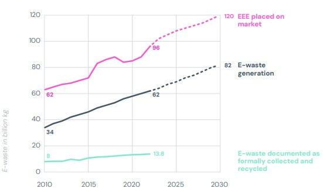
3. Prior Solutions
Before presenting your own solution, explain what has already been tried.
The goal isn't to attack previous solutions. You're showing what you learned from them and why there is still room for improvement.
Discuss relevant existing solutions and briefly explain their:
- Relevancy: how they respond to the problem you are trying to solve
- Strengths: What do they do well?
- Weaknesses: What problems or limitations do they have?
Note: The prior solutions you choose to discuss must be included in the portfolio. It is recommended to discuss at least two prior solutions. While discussing more than two is not prohibited, I recommend avoiding it to save space and keep the Introduction concise.
اشرح الحلول اللي اتعملت واتجرّبت قبل كده.
الهدف مش إنك تهاجم الحلول السابقة، لكن إنك توضّح إيه اللي اتعلمتوه منها، وليه لسه فيه مجال للتحسين.
اتكلم عن الحلول الموجودة اللي ليها علاقة بالمشكلة، واشرح باختصار:
- الحل ده بيحل إزاي مع المشكلة اللي إنت بتحاول تحلها؟
- الحل ده بيعمل إيه بشكل كويس؟ او اية النقط القوية اللي انت هتتعلم منها؟
- إيه المشاكل أو القيود الموجودة في الحل ده اللي انت هتتفادها؟
ملاحظة: الـPrior Solutions اللي تختار تتكلم عنها لازم تكون موجودة في الـPortfolio. يُفضّل إنك تتكلم عن حلين سابقين على الأقل. ورغم إن مفيش مشكلة إنك تتكلم عن أكتر من حلين، أنا أنصح إنك تتجنب ده عشان توفر مساحة وتخلي الـIntroduction مختصر و توفر عدد الكلمات.
For example: Several attempts have been made to address Egypt’s e-waste problem, each offering strengths but also revealing important limitations. Triple Re, Egypt’s first certified WEEE recycler, has processed over 5,500 tons of electronic waste and partnered with more than 200 organizations, demonstrating strong capacity and environmental safety. However, its overall impact is constrained by underutilized processing capacity, operating at only about 60%, due to limited raw material supply and insufficient storage space. On the other hand, the E-Tadweer application has made significant progress in public engagement by collecting thousands of tons of e-waste and incentivizing safe disposal through discounts and rewards. Yet, it also faces challenges, including limited drop-off locations, dependence on corporate partnerships, and reduced effectiveness when public awareness fluctuates. Both examples informed us of what works and what challenges persist in recycling E-waste.
4. Design Requirements
Now use what you learned from the previous solutions to establish what your new solution needs to accomplish.
List the important requirements your solution must meet.
For example, your solution might need to be:
- Accurate
- Affordable
- Environmentally friendly
- Safe
- Compact
- Efficient
For example: To move beyond the limitations of prior solutions, our team identified key design requirements for a new solution. The device needed to repurpose electronic components directly from discarded devices, operate with high accuracy and environmental safety, remain compact and affordable for school laboratories' use, and serve as a practical scientific instrument that could contribute to improving Egypt’s scientific and educational environment. These requirements guided the development of a solution that not only reduces waste but also promotes accessible learning.
5. Selection of Solution
Now introduce the solution your team chose.
Briefly explain:
- What the solution is
- How it works at a general level
- Why your team selected it
- How it meets the design requirements
You don't need to explain the entire construction process here. The detailed explanation belongs in Materials and Methods.
The important thing is to show that your solution was chosen for a reason, rather than appearing randomly at the end of the Introduction.
دلوقتي قدّم الحل اللي انت طبقته اختاره.
اشرح باختصار:
- إيه هو الحل
- بيشتغل إزاي بشكل عام
- ليه فريقك اختاره
- إزاي بيحقق الـDesign Requirements
مش محتاج تشرح هنا كل خطوات بناء أو تنفيذ الحل, لأن الشرح التفصيلي مكانه في الـMaterials and Methods.
المهم إنك توضّح إن الحل بتاعكم اتختار لسبب منطقي، مش إنه ظهر بشكل عشوائي في آخر الـIntroduction من غير ما القارئ يفهم ليه اخترتوه.
For example: With these considerations in mind, our team selected a portable absorbance meter constructed entirely from recycled electronic components. This device operates by emitting a narrow-band light beam through a liquid sample and measuring the transmitted intensity with an LDR sensor. Using the Beer–Lambert Law, the microcontroller calculates absorbance and converts it into concentration, allowing accurate measurement while being non-destructive to the liquid solution.
6. Optional: Transition to Materials and Methods
If you want, you can finish the Introduction with a short sentence that naturally leads into the next section.
For example:
“To construct the prototype, the team selected materials that met the identified design requirements. The following section describes the materials and methods used.”
Important note(s):
It is mandatory to include at least one (you can more if you have enough space) figures that belong to either of the sections you discussed (GCs, PTS, PS,). THEY MUST MAKE SENSE IN THEIR CONTEXT. Dont just add a random figure of a random graph with zero correlation. Don’t force the figure to make sense, choose one that naturally does.
Now here is a full example of an introduction:
Egypt is currently facing several urgent developmental issues, known as the Grand Challenges. Among these, three are especially critical: the need to improve the use of alternative energies, reduce pollution in air, water, and soil, and adapt to the effects of climate change. One of the primary contributors to these problems is Egypt's overwhelming reliance on fossil fuels for energy generation. As illustrated in Figure 1, more than 90% of Egypt’s electricity comes from fossil fuels, releasing vast quantities of greenhouse gases into the atmosphere and significantly worsening pollution levels and global warming (Our World in Data, 2024).
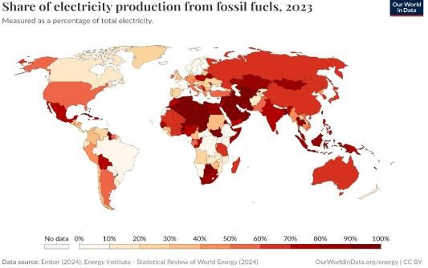
In response to these problems, Egypt and other nations have implemented large-scale renewable energy projects. One well-known national example is the Aswan High Dam, which generates hydroelectric power while also regulating Nile water flow. Despite its advantages, including significant electricity output and agricultural support, the dam presents major drawbacks. These include ecosystem disruption, sediment buildup, and the displacement of local communities. Similarly, on a global scale, Morocco’s Noor Solar Plant stands out as one of the world’s largest concentrated solar power stations. It uses mirrors to focus sunlight and generate heat, which is then converted into electricity. While highly innovative, its limitations lie in its high land and construction costs, and its dependency on intense, consistent sunlight.
Both examples informed us of what works and what challenges persist in existing renewable energy systems.
Before choosing our final solution, we established a clear set of design requirements. The system needed to produce at least 0.04 kilowatt-hours within five minutes of operation and be strong enough to withstand high water pressures without breaking. Environmental sustainability was also a core priority, so the materials and operations had to avoid causing harm or emitting pollutants. Finally, the model had to be compact, with a volume no greater than 0.5 cubic meters, to ensure it could be realistically constructed and tested.
With these design requirements in mind, our team developed a hybrid renewable energy system that combines a waterfall-based hydroelectric generator with a thermoelectric generator. The hydro component utilizes the kinetic energy of flowing water to spin a turbine, generating electricity rapidly and consistently. At the same time, the system leverages the temperature difference between the sun-heated surface and the cool water to power the thermoelectric generator. This dual approach not only increases energy output but also enhances reliability by ensuring power can still be produced even if one source fluctuates.
By integrating two renewable energy sources into a single compact and eco-friendly system, our solution directly addresses Egypt’s Grand Challenges while offering a scalable alternative to traditional energy production.
To build the prototype that embodies our solution, we carefully selected materials that are not only functional but also environmentally responsible and locally accessible. The next section outlines the materials used in the construction of our prototype.
Materials and Methods
As the title suggests, Materials and Methods are divided into two parts. The first part is Materials.
In this section, you need to present all the materials used to build your prototype in a table with columns including the following for each material:
- Material name — What is it?
- Illustration/Picture — Include a clear picture or illustration of the material.
- Description — Briefly describe the material when necessary.
- Purpose — Explain what the material was used for in your prototype.
- Price — State how much it cost.
- Source — Mention where you obtained it.
- At the end of the table list the total cost of building the prototype
في الجزء ده لازم تعرض كل اللي استخدمتوه في بناء الـPrototype
و لازم تروسوا الحاجات دي لكل شيء استخدمتوه
- اسم المادة: إيه هي المادة دي؟
- صورة أو رسم توضيحي: حط صورة أو رسم واضح للمادة.
- الوصف: اكتب وصف مختصر للمادة عند الحاجة.
- الاستخدام: وضّح المادة دي اتستخدمت في إيه في الـPrototype.
- السعر: اذكر سعر المادة.
- المصدر: اذكر جبت المادة منين (لو ال challenge طلب منك كدة
- لازم تحدد السعر الأجمالي بتاع المشروع في الاخر
Examples:
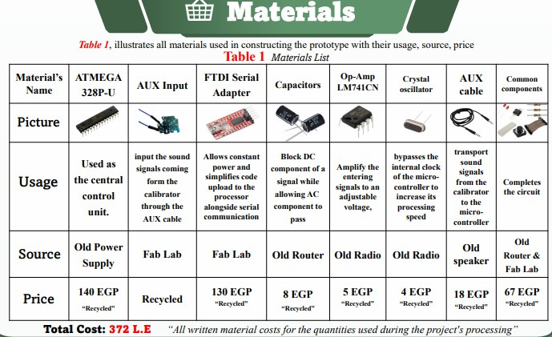
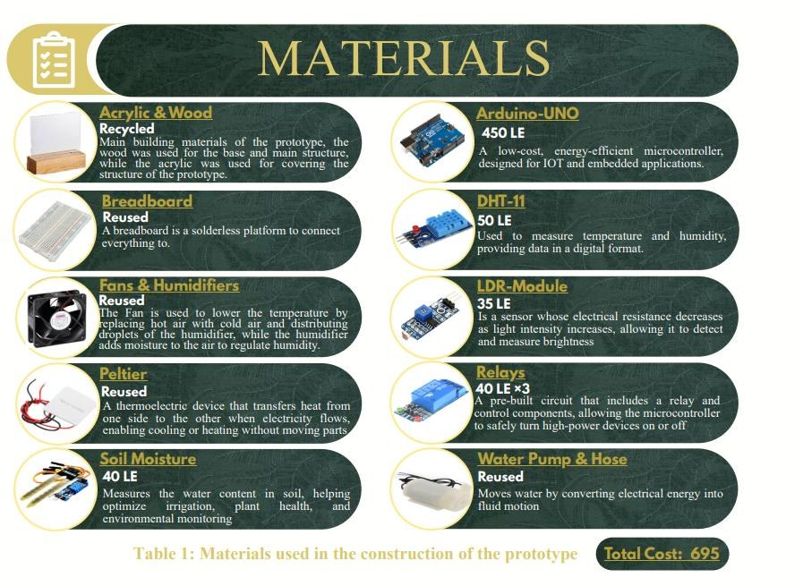
Methods
The Methods section explains the procedure used to construct, assemble, calibrate, prepare, test, etc. the prototype.
Since the full Portfolio already contains the detailed procedure, the Poster should only include the major steps and important actions. There is no need to include every small construction detail.
Organize the Methods into two or more steps/phases.
For each step or phase, explain:
What was done → How it was done → Why it was necessary
Figures:
You either include the circuitry of the entire project or the final look. If you don’t have enough space for both, the circuitry schematic diagram has a higher priority.
It is also recommended to use Figures to show the major steps and development of the prototype throughout the process. So, make sure to document your Capstone project throughout the semester by taking pictures as the prototype is being built and developed. (These figures are included in the presentation rather than the poster itself)
Note that:
Capstone Challenges often have specific requirements for the Methods section, and these requirements may change from one semester to another. Always check the design requirements for your specific challenge.
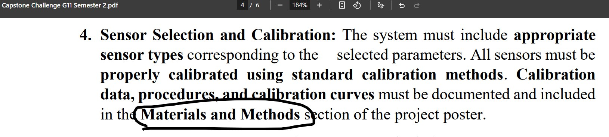
الMethods بتشرح الخطوات أو الإجراءات اللي اتعملت عشان يتم بناء وتجميع ومعايرة وتجهيز الـPrototype، وغيره حسب طبيعة المشروع.
بما إن الـPortfolio فيه بالفعل الخطوات بالتفصيل، فالنسخة الموجودة في الـPoster المفروض تحتوي بس على الخطوات الأساسية والإجراءات المهمة، من ما تخش في كل تفصيلة صغيرة في عملية البناء.
قسّم الـMethods الي خطوتين/مرحلتين او اكتير
وفي كل خطوة أو مرحلة، اشرح بالترتيب:
إيه اللي اتعمل → اتعمل إزاي → ليه كان ضروري
بالنسبة لل Figures اللي هقوله نصيحة و هو اختياري حاول دايمًا توفر مساحة في قسم الـMethods لعرض الشكل النهائي للـPrototype في figure
وكمان أنصح إنك تستخدم Figures لعرض تطور المشروع و اشكاله المختلفة أثناء عملية بنائه. عشان كده، مهم إنك توثّق الـCapstone بتاعك طول الترم عن طريق تصوير الـPrototype أثناء مراحل بنائه وتطوره.
خلي بالك ان الـCapstone Challenges غالبًا بيكون ليها متطلبات محددة لازم تتذكر في قسم الـMethods، والمتطلبات دي ممكن تختلف من ترم للتاني زي ما وضحت في ال example فوق
عشان كده، اتأكد دايمًا من متطلبات الـChallenge بتاعتكم قبل ما تكتب القسم.
Full example of methods:
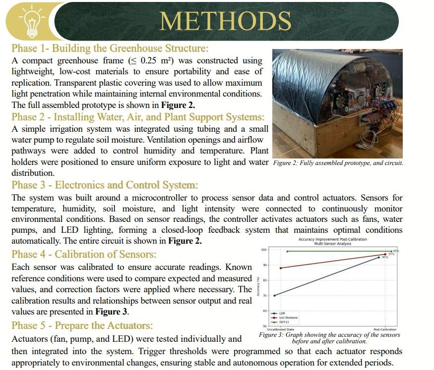
Notice how phase 4 was the request from the capstone challenge example I shown previously
Here is the full example in text poster format
Methods
Phase 1: Building the Greenhouse Structure:
A compact greenhouse frame (≤ 0.25 m²) was constructed using lightweight, low-cost materials to ensure portability and ease of replication. Transparent plastic covering was used to allow maximum light penetration while maintaining internal environmental conditions. The full assembled prototype is shown in Figure 2.
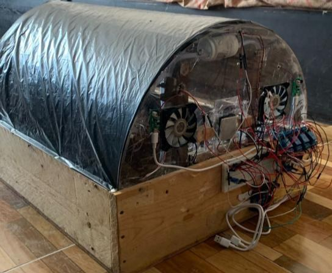
Phase 2: Installing Water, Air, and Plant Support Systems:
A simple irrigation system was integrated using tubing and a small water pump to regulate soil moisture. Ventilation openings and airflow pathways were added to control humidity and temperature. Plant holders were positioned to ensure uniform exposure to light and water distribution.Phase 3: Electronics and Control System:
The system was built around a microcontroller to process sensor data and control actuators. Sensors for temperature, humidity, soil moisture, and light intensity were connected to continuously monitor environmental conditions. Based on sensor readings, the controller activates components such as fans, water pumps, and LED lighting, forming a closed-loop feedback system that maintains optimal conditions automatically.Phase 4: Calibration of Sensors:
Each sensor was calibrated to ensure accurate readings. Known reference conditions were used to compare expected and measured values, and correction factors were applied where necessary. The calibration results and relationships between sensor output and real values are presented in Figure 3.
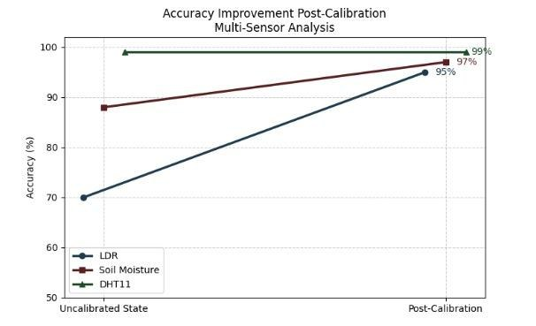
Phase 5: Prepping the Actuators:
Actuators (fan, pump, and LED) were tested individually and then integrated into the system. Trigger thresholds were programmed so that each actuator responds appropriately to environmental changes, ensuring stable and autonomous operation for extended periods.”
Test plan
This is the final section of the Materials and Methods.
Here, you should briefly describe the tests that should be performed on the prototype, how they should be conducted, what the pass criteria are, and how each test addresses the Design Requirements you already mentioned in the Introduction.
Basically, for each test, explain what is tested→ how it was tested → what counts as passing → which Design Requirement it checks.
الـTesting
ده آخر جزء في ال Materials and Methods هتشرح باختصار الاختبارات اللي اتعملت على ال Prototype، وإزاي اتعملت، وإيه هي المعايير اللي بناء عليها بتعتبر ان المشروع نجح، و علاقة كل اختبار بالـDesign Requirements اللي انت حددتها في الـIntroduction
ببساطة، كل Test تشرح فيه: اختبرت إيه → اختبرته إزاي → إيه اللي يعتبر نجاح → أنهي Design Requirement الاختبار ده معمول عشانه
Example:
Test Plan
- Real-time monitoring, data visualization, and functionality: The prototype must run continuously for over six hours, outputting parameter readings and displaying them as graphs. It passes if it maintains operation and correctly shows the data over time.
- Growing Area measurement: The prototype’s growing area must not exceed 0.25 m3. It is measured using a Vernier caliper, and it passes if the calculated size stays within this limit.
- Actuator Implementation and variation from normal conditions: The system must include actuators that regulate parameters and handle deviations by detecting, alerting, and correcting them. It is tested by introducing disturbances and measuring how quickly the system restores normal conditions.
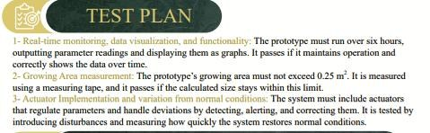
Results
The Results section presents the outcomes obtained from testing the prototype. It should show whether the prototype actually met its Design Requirements and what problems were discovered during testing.
The Results should include both positive and negative results, preferably in separate sections. It is also recommended to mention the changes or modifications made to address the negative results.
For each major result, whether positive or negative, explain:
What was observed → What the result showed → Why the result matters
For example, instead of simply saying:
“The pump worked.”
Give the actual result and what it demonstrated:
“The pump increased soil moisture from 58% to 81% in 47 seconds, demonstrating that the irrigation actuator could respond effectively when the soil moisture fell below the required range.”
Figures:
It is important to support your numbers and test results with Tables and Graphs whenever appropriate. These should clearly present the data obtained during testing.
Note:
The Results section should focus on actual observations and measurements, rather than detailed explanations of why the results happened.
Detailed interpretation and explanations of the results belong primarily in the Analysis section.
الـResults
ال Results بتعرض النتائج و الأقرام اللي تم الحصول عليها من اختبارات المشروع, المفروض توضح إذا كان الـPrototype حقق الـDesign Requirements فعلاً ولا لأ، وكمان يوضح المشاكل اللي ظهرت أثناء الاختبارات
الـResults لازم تحتوي على كل النتائج: الإيجابية و السلبية، ويفضل تقسيمهم لقسمين منفصلين. ومن الأفضل كمان ذكر التغييرات أو التعديلات اللي اتعملت لمعالجة النتائج السلبية.
بالنسبة لكل نتيجة مهمة، سواء كانت إيجابية أو سلبية، اشرح:
إيه اللي اتلاحظ → النتيجة وضحت إيه → ليه النتيجة دي مهمة
مثلاً، بدل ما تقول بس
“The pump worked.”
اذكر النتيجة الفعلية وإيه اللي أثبتته:
“The pump increased soil moisture from 58% to 81% in 47 seconds, demonstrating that the irrigation actuator could respond effectively when the soil moisture fell below the required range”.
الـFigures:
مهم إنك تدعم الأرقام ونتائج الاختبارات بالـTables والـGraphs كل ما يكون ده مناسب. لازم تكون الـTables والـGraphs واضحة وبتعرض البيانات او الأرقام اللي حصلتوا عليها أثناء الاختبارات.
- قسم Results المفروض يركّز على الملاحظات والقياسات الفعلية، مش على الشرح التفصيلي لسبب حدوث النتائج, الشرح والتحليل التفصيلي للنتائج مكانه الأساسي في قسم Analysis.
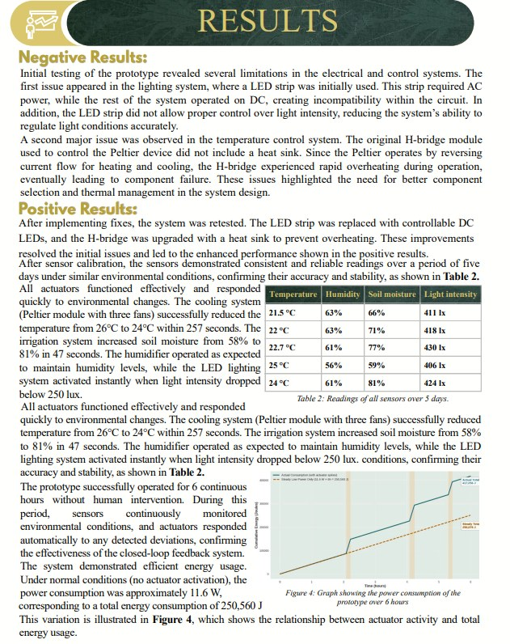
Results
Negative Results:
Initial testing of the prototype revealed several limitations in the electrical and control systems. The first issue appeared in the lighting system, where an LED strip was initially used. This strip required AC power, while the rest of the system operated on DC, creating incompatibility within the circuit. In addition, the LED strip did not allow proper control over light intensity, reducing the system’s ability to regulate light conditions accurately.
A second major issue was observed in the temperature control system. The original H-bridge module used to control the Peltier device did not include a heat sink. Since the Peltier operates by reversing current flow for heating and cooling, the H-bridge experienced rapid overheating during operation, eventually leading to component failure. These issues highlighted the need for better component selection and thermal management in the system design.
Positive Results:
After implementing fixes, the system was retested. The LED strip was replaced with controllable DC LEDs, and the H-bridge was upgraded with a heat sink to prevent overheating. These improvements resolved the initial issues and led to the enhanced performance shown in the positive results.
After sensor calibration, the sensors demonstrated consistent and reliable readings over a period of five days under similar environmental conditions, confirming their accuracy and stability, as shown in Table 2.
Table 2: Readings of all sensors over 5 days.
| Temperature (°C) | Humidity (%) | Soil moisture (%) | Light intensity (lx) | Max 1000 |
|---|---|---|---|---|
| 21.5 | 63 | 66 | 411 | |
| 22 | 63 | 71 | 418 | |
| 22.7 | 61 | 77 | 430 | |
| 25 | 56 | 59 | 406 | |
| 24 | 61 | 81 | 424 |
All actuators functioned effectively and responded quickly to environmental changes. The cooling system (Peltier module with three fans) successfully reduced temperature from 26°C to 24°C within 257 seconds. The irrigation system increased soil moisture from 58% to 81% in 47 seconds. The humidifier operated as expected to maintain humidity levels, while the LED lighting system activated instantly when light intensity dropped below 250 lux.
The prototype successfully operated for 6 continuous hours without human intervention. During this period, sensors continuously monitored environmental conditions, and actuators responded automatically to any detected deviations, confirming the effectiveness of the closed-loop feedback system.
The system demonstrated efficient energy usage. Under normal conditions (no actuator activation), the power consumption was approximately 11.6 W, corresponding to a total energy consumption of 250,560 J over 6 hours. When actuators were active for an average of 25 minutes, total energy consumption increased to 416,940 J. This variation is illustrated in Figure 4, which shows the relationship between actuator activity and total energy usage.
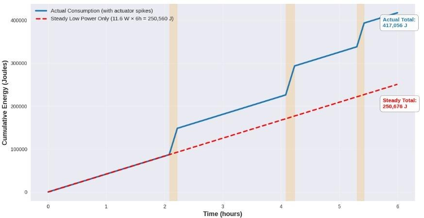
Analysis
The analysis and discussion section is practically the core of your capstone project for both the portfolio and poster. Its only legitimate challenge is its limited space (in the poster) and intense need for conciseness and focus. A lot of people, including evaluators and teachers, may not be the best informed and knowledgeable about the project and its scientific basis, no matter how simple it is. That’s why we follow the principle of “explain it to me like I’m five years old” fulfilling this principle deems your analysis to be thorough and understandable without the need for a scientific background of any kind.
جزء الـdiscussion and analysis هو عملياً قلب الـcapstone project، في الـportfolio والـposter الاتنين. والتحدي الحقيقي الوحيد فيه هو المساحة المحدودة (في الـposter) والاحتياج الشديد للاختصار والتركيز.
ناس كتير، منهم المقيّمين والمدرسين، ممكن مايكونوش ملمّين بالمشروع وأساسه العلمي مهما كان بسيط. عشان كده بنمشي على مبدأ "explain it to me like I’m five years old" (اشرحهالي كأني طفل عنده 5 سنين)، ولما تحقق المبدأ ده يبقى الـanalysis بتاعك شامل ومفهوم من غير ما القارئ يحتاج أي خلفية علمية.
First lets start off with what you should go over in this section before we get to how and all the specifics:
خلينا نبدأ الأول باللي المفروض تتكلم عنه في الجزء ده، قبل ما ندخل في الـ "إزاي" والتفاصيل:
- Introductory phase. In here you start by mentioning the grand challenges and problem to be solved that urged you to work on your project.
الـIntroductory phase (مرحلة التمهيد): هنا بتبدأ بذكر الـgrand challenges والـproblem to be solved اللي خلوك تشتغل على المشروع.
- Ground preparation phase. In here you follow up with the project you have chosen and how it is believed to have a positive impact on the aforementioned issues you want to overcome.
الـGround preparation phase (مرحلة تجهيز الأرضية): هنا بتكمّل بالمشروع اللي اخترته، وإزاي متوقع إن يكون ليه تأثير إيجابي على المشاكل اللي ذكرتها وعايز تتغلب عليها.
- The introductory phase as well as the ground preparation phase could technically go as “summarizations” for both chapter 1 and 2 respectively.
ممكن يعتبروا عملياً الـintroductory phase والـground preparation phase "ملخصات" لـchapter 1 وchapter 2 بالترتيب.
- The Discussion phase. In here you discuss how the projects parts exist in unison and harmony, where you mention their role, effect, and how they function. This is mentioned in a manner to simply explain how this entire combination reaches the results.
الـDiscussion phase (مرحلة المناقشة): هنا بتتكلم إزاي أجزاء المشروع شغالة مع بعض في تناغم، وبتذكر دور كل جزء وتأثيره وبيشتغل إزاي؛ والهدف إنك تشرح ببساطة إزاي التركيبة دي كلها بتوصل للنتايج.
- The analytic phase. In here you go over the results and other key information like equations and parameter relations, explain what they mean as results and what specific deviations or results could mean or affect the performance of your project.
الـAnalytic phase (مرحلة التحليل): هنا بتمر على النتايج وأي معلومات مهمة تانية زي الـequations والعلاقات بين الـparameters، وتشرح معناها كنتايج، وإيه معنى أي انحرافات أو نتايج معينة وإزاي ممكن تأثر على أداء المشروع.
- Ending/conclusion phase. In here you analyze what this project may mean for the future or the goals it will hopefully fulfill (completely optional).
الـEnding/conclusion phase (مرحلة الخاتمة): هنا بتحلل المشروع ده ممكن يعني إيه للمستقبل، أو الأهداف اللي بنتمنى يحققها (اختياري تماماً).
The introductory phase:
There’s this tip which is “You start off your analysis by reconsidering the grand challenges”
فيه نصيحة منتشرة بتقول "You start off your analysis by reconsidering the grand challenges" (يعني ابدأ الـanalysis بإنك ترجع للـgrand challenges تاني).
We think this is really, really wrong considering that throughout your entire portfolio, you have an ENTIRE chapter dedicated to defining the grand challenges, connecting them and researching them. It is important to analyze them here once more so we don’t argue that the grand challenges here can’t be considered; however, that should be done so in a more natural fluid manner, and introductory sense to refrain from splitting them into two different parts which makes this a whole lot longer (introduction then grand challenges).
واحنا شايفين إن ده غلط جداً، لأنك طول الـportfolio عندك chapter كامل مخصص لتعريف الـgrand challenges وربطهم والـresearch عنهم. مهم إنك تحللهم هنا تاني، فاحنا مش بنقول إن الـgrand challenges ماينفعش تتذكر هنا؛ لكن لازم ده يحصل بشكل طبيعي وسلس وبروح المقدمة، من غير ما تقسمهم لجزئين منفصلين (مقدمة وبعدين grand challenges)، لأن ده بيطوّل الجزء جداً.
One of the best ways to hook a reader’s attention (which is very important in this section to make sure a reader extracts the right amount of information well enough) is to start off with a side plot or statistic—a new insight is much advised. In the case of the analysis it is possible to start off with the problem to be solved or statement that we identified earlier, utilize an important mind-blowing statistic or piece of information. You connect it to the grand challenges in a backwards type of approach which helps inflate its importance so instead of
من أحسن الطرق إنك تشد انتباه القارئ (وده مهم جداً في الجزء ده عشان تضمن إنه ياخد كمية المعلومات الصح بشكل كويس) إنك تبدأ بقصة جانبية أو إحصائية، ويُفضّل جداً تكون insight جديدة. في الـanalysis ممكن تبدأ بالـproblem to be solved أو الـstatement اللي حددناه قبل كده، وتستخدم إحصائية أو معلومة مهمة mind-blowing (تخض). وتربطها بالـgrand challenges بطريقة عكسية، ودي بتكبّر أهميتها. يعني بدل:
“problems A B and C are all connected by problem D because of X stats proving it is really bad and requires solving”
you might find it more fluid or attention grabbing to go | الأحسن تكتبها كده
“Whilst analyzing problem D we found that the statistic X was a clear product which also sprouted, realizing new branching effects on many challenges Egypt faces, some of which are problems A, B and C. It is believed that solving or putting efforts to suppress Problem D could have positive effects on many of the aforementioned challenges.”
An example for the mind-blowing statistic or insight is to analyze the problem’s cause to something more scientific or quantifiable in a way whilst also connecting it to something people can understand and see for themselves—going “increased death rates due to CO2 emissions” is more interesting than just “increased CO2 emissions” because people understand how bad death is, but not necessarily CO2 emissions (of course you can try and explain it further but it just spirals into more complexities). One time we did this by stating how heavy metals contaminate water and provided the Osmotic Pressure equation, explaining how it affects the local environment (people know how hard it is to find drinkable and clean water to an extent) and using that equation proving that statement. As you can see in the following example:
مثال على الإحصائية أو الـinsight الـmind-blowing: إنك تحلل سبب المشكلة لحاجة علمية أو قابلة للقياس، وفي نفس الوقت تربطها بحاجة الناس تقدر تفهمها وتشوفها بنفسها. إنك تقول "increased death rates due to CO2 emissions" أكتر إثارة للاهتمام من "increased CO2 emissions" بس، لأن الناس فاهمة قد إيه الموت وحش، لكن مش بالضرورة فاهمة الـCO2 emissions (طبعاً ممكن تحاول تشرحها أكتر بس ده هيدخلك في تعقيدات أكتر). ومرة عملنا كده لما قلنا إن الـheavy metals بتلوّث المياه، وحطينا معادلة الـOsmotic Pressure، وشرحنا إزاي ده بيأثر على البيئة المحلية (الناس عارفة لحد ما قد إيه صعب تلاقي مياه نضيفة تتشرب)، واستخدمنا المعادلة دي عشان نثبت الكلام ده. زي ما هتشوف في المثال اللي جاي:
“Electronic waste, which typically releases heavy metals into the environment through soil and water was found to make up over 70% of water toxicity and pollution. This affects public health, especially in water since only 20% to 22.3% can be recycled effectively. Moreover, by increasing the amount of the leached electronic waste in the water, the molarity (concentration) of the heavy metals increases—making the water inedible and environmentally toxic—which increases the osmotic pressure because it is directly proportional to the molarity, where the formula of the osmotic pressure is Π = iMRT, where i is the van't Hoff factor, M is the molarity, R is the ideal gas constant, and T is the temperature in Kelvin. This makes the process of reverse osmosis to filter the water harder and consumes more energy in the filtration process, [according to (CH.2.02)]. This makes it much harder to improve the technological environment, reduce and adapt to climate change and pollution, and have recyclable waste as an option for material extraction. This is why E-waste is believed to be a major issue that must be attacked at the core of disposal by creating a project that prevents this line of events from taking place.“
Here we were able to grab the attention using an important piece of statistical information to explain the scientific reasoning behind it as well as explaining what it means for the average human who doesn’t know what heavy metals are or why they are bad and we finished off by connecting this statement to the grand challenges we believe are important for Egypt to confront.
هنا قدرنا نشد الانتباه بمعلومة إحصائية مهمة، وشرحنا الأساس العلمي وراها، وكمان شرحنا معناها للإنسان العادي اللي مايعرفش يعني إيه heavy metals أو ليه هي مضرة، وختمنا بإننا ربطنا الكلام ده بالـgrand challenges اللي شايفين إنها مهمة إن مصر تواجهها.
This is a great opening since you quantify the problem’s weight to the reader, they see that there’s actually a need to stop this (if they want to keep drinking clean water).
دي بداية ممتازة لأنك بتبيّن للقارئ حجم المشكلة بالأرقام، فيشوف إن فيه احتياج حقيقي لوقفها (لو عايز يفضل يشرب مياه نضيفة).
You then immediately introduce your solution—the ground preparation phase—by stating how it tackles that specific problem. This phase is pretty straightforward and petite.
بعدها على طول بتقدّم الحل بتاعك، وده الـground preparation phase، بإنك توضح إزاي بيعالج المشكلة دي بالذات. والمرحلة دي بسيطة وقصيرة.
This is called the discussion phase, meaning that you do need to “Discuss” things, and here you’re going to want to discuss what actually made your project work and stand as it is while you’re writing this. This isn’t just throwing around equations and your “scientific base” to come to a conclusion that your projects works at the end (hooray I guess but no)
دي اسمها الـdiscussion phase، يعني لازم فعلاً "تناقش" حاجات؛ وهنا هتناقش إيه اللي خلّى مشروعك يشتغل ويبقى بالشكل اللي هو عليه وانت بتكتب. الموضوع مش إنك ترمي equations والـ"scientific base" بتاعك وخلاص عشان توصل في الآخر إن المشروع شغال (هيييه... بس لأ، مش كده).
You must discuss what each part is, its role, how it contributes and why it is the way it is. Also don’t frame this as “we did this and this happened so this is a success” this is basically how an uneducated person reaches a solution.
لازم تناقش كل جزء هو إيه، ودوره، وبيساهم إزاي، وليه هو بالشكل ده. وكمان ماتقدّمش الكلام بشكل "we did this and this happened so this is a success"، ده أسلوب واحد مش دارس بيحاول يبرر بيه الحل.
The EDP and scientific method are actually the exact opposite; “we found this phenomenon happens when in these conditions, since this was our goal we decided to replicate this by….. and at the end we reached the needed result” it is also beneficial to mention prior options you deduced to not be the most optimal, a good example goes as follows:
الـEDP والـscientific method بالظبط كده عكس: "we found this phenomenon happens when in these conditions, since this was our goal we decided to replicate this by..... and at the end we reached the needed result". ومفيد كمان تذكر الاختيارات اللي كانت قدامك قبل كده واستنتجت إنها مش الأمثل. ودي مثال كويس:
“With large computational data and quick changing parameters being in effect, it was deduced that it is mandatory to include a IC with a high enough frequency and computational power to satisfy the systems needs. While both Arduino and ESP32 are microchips that run calculations and automate responses effectively, Arduino would require an external internet or network based IC connection to transmit data to server. Not only is this less energy efficient, but also it demands and uses up some of the computational power and speed of the Arduino, deeming the ESP32 the optimal choice.”
This only needs the number specifics of their respective power and computation speeds as well as what the system you plan on building demands. Say you plan on building an adaptive system that stays in equilibrium even though changes occur every 3 seconds. The Arduino may issue orders every 4 seconds and by then the state of the system has already changed (you are in the present fixing the irrelevant past) whilst the ESP32 could issue the same commands with higher efficiency in just 2 seconds. This is the type of discussion you want, you want to explain and analyze your choices and what they mean in relation to the intended result.
ده محتاج بس الأرقام الخاصة بقدرة كل واحد وسرعة الحساب، وإيه اللي الـsystem اللي ناوي تبنيه محتاجه. افترض إنك ناوي تبني adaptive system لازم يفضل متوازن رغم إن فيه تغييرات بتحصل كل 3 ثواني؛ الـArduino ممكن يدّي أوامر كل 4 ثواني، ووقتها حالة الـsystem تكون اتغيرت خلاص (يعني انت في الحاضر بتصلّح ماضي مابقاش له لازمة)، بينما الـESP32 يقدر يدّي نفس الأوامر بكفاءة أعلى في ثانيتين بس. ده نوع المناقشة اللي انت عايزه: تشرح وتحلل اختياراتك ومعناها بالنسبة للنتيجة المطلوبة.
A more concise example is as follows: | أوجز مثال
“In the circuit, the prototype’s microcontroller or ESP32 can provide 72Mbps of WiFi transmission speed, sufficient for local server communication at reliable speeds; however, rendering it ineffective in heavy-duty tasks such as AI-server and asynchronous communication. Therefore, it’d be too hard to manage an AI communication. It has an internal clock speed of 240MHz, far greater than its Arduino counterpart; allowing it to process much heavier tasks; however, none of these microcontrollers is suited for heavy-duty computation per reading (readings are at a frequency of 0.5 Hz or 2 sec); hence, the best suited option is to upload the function data to the central server.”
This accurately explains why the ESP32 was chosen and why the implementation and usage of a central server was necessary.
ده بيشرح بدقة ليه اختاروا الـESP32، وليه كان ضروري نستخدم central server.
Another example of discussion is the prototype’s computation process, saying that it outputs certain variables or responses to a change in the environment. As seen in the following example
مثال تاني على الـdiscussion: عملية الحساب اللي بيعملها الـprototype، يعني إنه بيطلّع variables معينة أو بيستجيب لتغيّر في البيئة، زي ما في المثال اللي جاي:
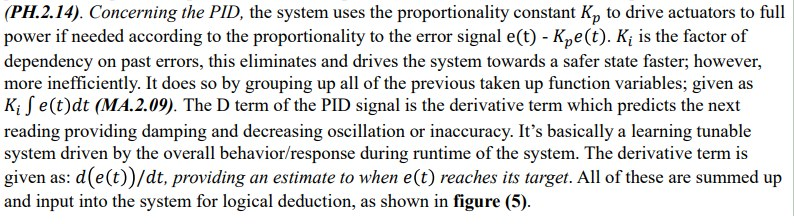
This discussion was able to explain what happens software-wise. Where using the inputs from sensors and running them through a PID system loop (a system that focuses on correcting deviations without a mathematical model predicting exact values) I don’t want to bore you with the details of a PID’s function but basically in this part it was explained how each variable helps the system know how much time is needed to keep the actuators on (another word for things you control like motors but with more functions like a humidifier or a Peltier that cools down the system). This is basically the logic of the system which you must discuss and explain. In here it was mentioned that this system basically learns and tunes its future responses referencing its past adaptations. What does this achieve you may ask? Not only are you obviously explaining how your system functions, this also helped show the fact that the system’s efficiency tunes up and increases the more experienced it is (this explained the decrease in response time in our system because it kept getting better and faster which was showcased in the results)
المناقشة دي قدرت تشرح إيه اللي بيحصل من ناحية الـsoftware: إزاي بناخد الـinputs من الـsensors ونعدّيها على PID system loop (ده system بيركّز على تصحيح الانحرافات من غير mathematical model بيتوقع القيم بالظبط). مش هزهقك بتفاصيل شغل الـPID، بس باختصار الجزء ده شرح إزاي كل variable بيساعد الـsystem يعرف محتاج يشغّل الـactuators قد إيه (الـactuators دي الحاجات اللي بتتحكم فيها زي الـmotors، بس بوظايف أكتر، زي humidifier أو Peltier بيبرّد الـsystem). ده عملياً logic بتاع الـsystem، ولازم تناقشه وتشرحه. واتذكر هنا كمان إن الـsystem ده بيتعلم وبيظبط استجاباته الجاية بناءً على تكيّفاته اللي فاتت. طب ده بيحقق إيه؟ غير إنك بتشرح الـsystem شغال إزاي، ده كمان وضّح إن كفاءة الـsystem بتتحسن وتزيد كل ما خبرته تزيد (وده فسّر قلة الـresponse time عندنا، لأنه فضل يتحسن ويبقى أسرع، وده ظهر في الـresults).
By “Analysis phase”, I mean that you need to analyze data you have, whether that’d be data you’ve acquired from your results or from mathematical models/AI models. You need to analyze what this data means and what it conveys or means for your prototype. After You reflected on how you actually got to this result or the feature that allowed you to easily achieve this result beforehand (discussion). You’re also required to provide insight, meaning that you show what the results actually mean and what it could mean for people trying to attempt this project. (For example, results may be varying depending on user, or for other people, results may vary for every trial, which you have to note down, stating whether it’s a bad or a good thing and going the extra mile to talk about what this means if it was created on a large scale and stating that it may not be as accurate as your estimation deems it to be.)
بـ "Analysis phase" أقصد إنك محتاج تحلل الداتا اللي عندك، سواء كانت داتا من النتايج أو من mathematical models أو AI models. لازم تحلل الداتا دي معناها إيه وبتوصّل إيه، ومعناها إيه بالنسبة للـprototype. وده بعد ما تكون اتكلمت عن إزاي وصلت للنتيجة دي فعلاً، أو الـfeature اللي خلتك توصل لها بسهولة (وده الـdiscussion). ومطلوب منك كمان تقدّم insight، يعني توضح النتايج معناها الحقيقي إيه، وممكن تعني إيه للناس اللي هتحاول تعمل المشروع ده. (مثلاً النتايج ممكن تختلف حسب المستخدم، أو ممكن تختلف من trial للتاني، ودي لازم تسجلها وتقول هي حاجة كويسة ولا وحشة، وتشتغل زيادة وتتكلم ده معناه إيه لو المشروع اتعمل على نطاق كبير، وتقول إنه ممكن مايكونش بالدقة اللي تقديرك بيقولها).
NOW things get real sciency; you should start dissecting your entire project into different ideas with each idea consisting of a paragraph and optionally, a figure. If there is a relation between factors you have been studying in your project or something you calculate, it is mandatory to include a graph of that relation along with the that relation’s equation. Every challenge or project will have at least one quantifiable quantity that has to have a point of comparison in relation to another (you will likely find this highlighted as a requirement in your challenge paper), this could be any of the following:
دلوقتي بقى الموضوع هيبقى علمي بجد: لازم تبدأ تفصّص المشروع كله لأفكار مختلفة، كل فكرة في فقرة ومعاها figure (اختياري). ولو فيه علاقة بين عوامل انت بتدرسها في المشروع أو حاجة بتحسبها، يبقى إجباري تحط graph للعلاقة دي ومعاها الـequation بتاعتها. وكل challenge أو مشروع هيكون فيه على الأقل كمية واحدة بتتقاس ولازم يكون ليها نقطة مقارنة بكمية تانية (وغالباً هتلاقيها متحددة كـrequirement في الـchallenge paper)، وممكن تكون أي حاجة من دول:
- Response time
- Offset or deflection (bending in case of an architectural based project)
- Energy production
- Pollutant concentration (filtration based projects)
Each type of project has a way to determine its efficiency and this could come in various ways. Sometimes it is mandatory to include sometimes it isn’t. To clear up any confusion, efficiency isn’t just a “product per time”, there are many types of efficiencies regarding any project ranging from cost efficiency [product vs cost], efficiency of usage [how easy it is to be used vs how well it performs], efficiency of maintenance [maintenance cost and time to complete vs how often it is needed]. These are strong scientifical values because they help you showcase how well your project preforms while referencing real life industrial implementations and base efficiencies.
كل نوع مشروع ليه طريقة لتحديد كفاءته (efficiency)، ودي ممكن تيجي بأشكال مختلفة؛ ساعات بتكون إجبارية وساعات لأ. وعشان نشيل اي اختلاف: الـefficiency مش بس "product per time"؛ فيه أنواع كتير من الكفاءة لأي مشروع، زي cost efficiency [المنتج مقابل التكلفة]، وefficiency of usage [سهولة الاستخدام مقابل جودة الأداء]، وefficiency of maintenance [تكلفة ووقت الصيانة مقابل هي محتاجة قد إيه]. ودي قيم علمية قوية لأنها بتساعدك توضح مشروعك بيأدي قد إيه كويس، مع الرجوع لتطبيقات صناعية حقيقية وكفاءات مرجعية.
An example of an analysis focused part: | مثال مركّز على التحليل
“Further analysis showed that there was a consistent error as shown in figure (4), this was due to the limitations presented by the Nyquist frequency, which states that the maximum readable frequency is half of the sampling frequency (4000Hz) after 2000Hz, the accuracy decreases substantially. This sampling frequency is appropriate because the number of samples is 128”
This part was able to analyze and give a well known scientific explanation for the decrease of accuracy above a certain threshold. What helps complete this paragraph is its analytical explanation of what this means for the project or the results “this sampling frequency is appropriate…” it basically deemed it as an issue that arose, but doesn’t have any major drawbacks since the role of this system didn’t need to exceed this threshold in any way or form. In short it fulfilled its part and succeeded.
الجزء ده قدر يحلل ويدّي تفسير علمي معروف لنقص الدقة فوق حد معين. واللي كمّل الفقرة دي هو الشرح التحليلي لمعنى ده بالنسبة للمشروع أو النتايج "this sampling frequency is appropriate..."؛ يعني اعتبرها مشكلة ظهرت، بس مالهاش عيوب كبيرة لأن دور الـsystem ماكانش محتاج يعدّي الحد ده بأي شكل. باختصار: عمل دوره ونجح.
In another example: | مثال تاني
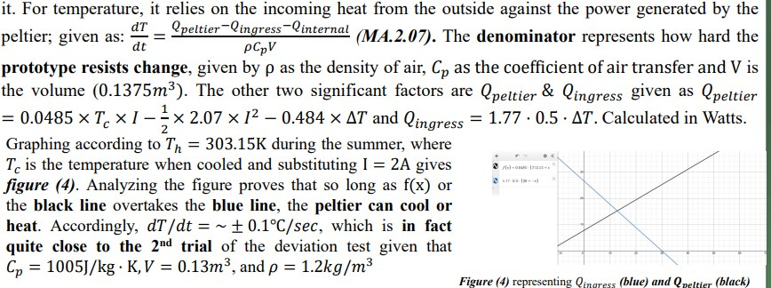
The equation for the change in temperature with respect to time was discussed. In this one particular example a graph of the relation between two opposing energy variables—Q ingress the blue line and Q peltier the black line—is shown. By priorly measuring the volume of the system and the internal energy (in this case only heat is predominant) and using norm values for the rest of equation’s variables such as air density and air transfer (Q peltier is something you control through the ESP32 analog output {the stronger the signal the stronger it cools down the system}) Q ingress was the incoming heat from the electric components and the system passively heating up from its surrounding environment. This equation and graph helped determine when our system was efficient enough to overcome ingress and cool down the interior and also the minimum temperature we could reach (determined to be the intersection point between the two lines) However, this wasn’t the most perfect analysis paragraph. See, the graph was a little miniscule making it hard to see and understand clearly, as well as the fact that this is an analysis section in the poster (where you are allowed to cut down on the definitions and explanations by including them in the presentation) which happened to be a little bit crammed. However, in the portfolio Analysis it was way clearer with the necessary distinctions and definitions.
هنا اتناقشت معادلة تغيّر درجة الحرارة مع الزمن. وفي المثال ده بالذات معروض graph للعلاقة بين اتنين energy variables عكس بعض: Q ingress (الخط الأزرق) وQ peltier (الخط الأسود). بقياس حجم الـsystem والطاقة الداخلية قبلها (وفي الحالة دي الحرارة هي الغالبة)، واستخدام القيم المعيارية لباقي متغيرات المعادلة زي كثافة الهوا وانتقال الهوا (والـQ peltier ده حاجة بتتحكم فيها عن طريق الـanalog output بتاع الـESP32؛ كل ما الإشارة تقوى كل ما يبرّد الـsystem أكتر)، والـQ ingress هو الحرارة الداخلة من المكونات الكهربية ومن تسخين الـsystem لنفسه بشكل سلبي من البيئة اللي حواليه. المعادلة والـgraph دول ساعدوا نحدد إمتى الـsystem بقى كفء كفاية إنه يتغلب على الـingress ويبرّد من جوه، وكمان أقل درجة حرارة نقدر نوصلها (اللي طلعت نقطة تقاطع الخطين). بس دي ماكانتش أكمل فقرة تحليل؛ الـgraph كان صغير شوية فصعب يتشاف ويتفهم بوضوح، وكمان ده كان analysis section في الـposter (اللي مسموح فيه تقلل التعريفات والشرح وتحطهم في الـpresentation) فكان متزحم شوية. لكن في الـAnalysis بتاع الـportfolio كان أوضح بكتير ومعاه الفروق والتعريفات اللازمة.
The general thought process behind actually doing all this requires you to be able to take your results, your prototype and your design requirements and combine all of these into one solid idea, mixing everything together, adding in a little bit of “Element X” (as in, references and citations that support your claims), and a bit of rhetorical thinking alongside new insights and advantages your project has provided, for example:
طريقة التفكير العامة ورا كل ده إنك تقدر تاخد النتايج والـprototype والـdesign requirements وتجمعهم كلهم في فكرة واحدة قوية، تخلط كل حاجة مع بعض، وتضيف شوية "Element X" (يعني references وcitations بتدعم كلامك)، وشوية تفكير إقناعي (rhetorical) مع insights جديدة ومميزات قدّمها مشروعك. مثلاً:
“This prototype model was particularly impressive at extracting heavy metals from water, giving the water a heavy metal purity of >99.9%.”
So long as the bolded words aren’t already in the results area and this is a conclusion from your results through an equation you used during your analysis, then this is a new insight. You concoct all of these to proceed into your concluding phase.
طالما الكلام اللي عليه bold مكانش مكتوب فال results و ده استنتاج من النتايج بتاعتك (يعني حاجة ممكن النتايج بتاعتك كانت بتلقح عليها لكن مش هتتفهم على طول), و انت شرحتها فال analysis باستخدام قوانين و هكذا, ف ده كده فعلاً منظور جديد للمشروع بتاعك او new insight ! انت بتجمع كل الحجات ديه عشان توصل للمرحلة الخاتمة
That’s generally it regarding your analysis!
وده تقريباً كل حاجة عن الـanalysis!
Important notes!!! | ملاحظات مهمة جدا:
- You’re going to be putting little parentheses next to text that links to something in your curriculum like this:
هتحط أقواس صغيرة جنب الكلام اللي بيربط بحاجة في المنهج بتاعك، زي كده:
“This makes the process of reverse osmosis to filter the water harder and consumes more energy in the filtration process, according to (CH.2.02)”
You need to reference curricular learning outcomes at a minimum of 5 learning outcomes in your analysis.
لازم تعمل reference لـ5 learning outcomes على الأقل من المنهج في الـanalysis بتاعك.
- Regarding the grand challenges themselves, you want to actually incorporate them into your analysis, talking about how your results solved that challenge, and if possible, if applied in real life, provide insight on how long it would take/how much it would cost and how effective it would be to apply your capstone. (conclusion or ending phase)
بالنسبة للـgrand challenges نفسها، لازم تدخّلها فعلاً في الـanalysis، وتتكلم إزاي نتايجك حلّت الـchallenge ده، ولو ينفع، لو اتطبق في الحقيقة، تدّي insight عن هياخد وقت قد إيه، وهيتكلف قد إيه، وهيبقى فعّال قد إيه تطبيق الـcapstone بتاعك (وده في الـconclusion أو الـending phase).
- In-text citation is important and especially mention reference books or research papers of origin in regard to equations.
الـIn-text citation مهم، وخصوصاً إنك تذكر الكتب المرجعية أو الـresearch papers اللي جات منها الـequations.
- Correctly and concisely label graphs and figures whilst sizing them up enough for someone to read at a distance.
اعمل label للـgraphs والـfigures بشكل صح ومختصر، وكبّرها كفاية إن حد يقدر يقرأها من بعيد.
- Do not re-insert the results table here, discuss them instantly.
ماتحطش جدول النتايج تاني هنا؛ ناقش النتايج على طول.
- Do not leave a quantity or phenomena undiscussed or unanalyzed
ماتسيبش أي كمية أو ظاهرة من غير مناقشة أو تحليل.
There will be instances where some things are just measurable with no clear way to predict or control, simply stating this fact is sufficient in those cases.
هيبقى فيه حالات بعض الحاجات فيها بتتقاس وبس ومفيش طريقة واضحة تتوقعها أو تتحكم فيها؛ في الحالات دي كفاية إنك تقول الحقيقة دي.
- Do not make random graphs and relations between variables independent of each other. An energy to air humidity graph makes no sense and has no value to this section, please don’t just inflate your writing for no reason.
ماتعملش graphs عشوائية وعلاقات بين variables مالهاش علاقة ببعض. graph بين الطاقة ورطوبة الهوا مثلاً مالوش معنى ومالوش قيمة في الجزء ده؛ لو سمحت ماتنفخش الكتابة من غير سبب.
The following is an entire analysis & discussion: | مثال كامل لـAnalysis & Discussion
{
The test results demonstrate that the device was designed successfully to address the grand challenges and solve the core problem, which is technological advancements and waste recycling. The project mainly solves the problem of electronic waste, which typically releases heavy metals into the environment through soil and water. This affects public health, especially in water, because it is the main source of life. Moreover, by increasing the amount of the leached electronic waste in the water, the molarity (concentration) of the heavy metals increases, which increases the osmotic pressure because it is directly proportional to the molarity, where the formula of the osmotic pressure is Π = iMRT, where i is the van't Hoff factor, M is the molarity, R is the ideal gas constant, and T is the temperature in Kelvin. This makes the process of reverse osmosis to filter the water harder and consumes more energy in the filtration process, according to (CH.2.02).
To address this problem, it was decided to make a scientific device, which is an oscilloscope, but all its electronic components must be recycled. The prototype handles the readings following four stages, which are the filtering stage, the amplifying stage, the DC bias stage, and the digital processing stage. The first three stages are focused on hardware, meanwhile, the last stage is focused on computation and software. This device graphs an input analog signal and using a certain mode, can output certain variables like the frequency, amplitude, and the time of a period (multiplicative inverse of frequency). The results provided are shown in Table (3.02).
These results are a direct product of a complex mathematical computation (software) called a Fast Fourier Transform (hereinafter referred to as FFT). This computation turns a complex wave into all its constituent waves, which is a law of summation of three main constituents, a DC bias (a DC component which is always the first sample and is never the peak frequency nor the peak amplitude), a sum of cosine waves, and sum of sine waves. When an FFT process is called on a complex signal (same as a polynomial) (MA.2.01) incoming from the AUX input, it turns it into a cosine wave in one set of variables (called the REAL SET OF DATA), and a sine wave in the other set (called the IMAGINARY SET OF DATA). In both, a set of frequencies is plotted against an amplitude. The highest amplitude out of all is the frequency of the input wave. If the input signal were to be recalculated or reformed, it would be a summation of the DC and the two trigonometric functions. This reformation is given as: ω(t) = aoffset + Σ ai · cos(2πfit + ϕi) + Σ aj · sin(2πfjt + ϕj), where aoffset is the DC bias offset, ai is the ith amplitude for the set of all amplitudes, fi is the frequency at that amplitude, and ϕi is the phase of the wave (horizontal transformation). Instead of summing up everything to achieve the complex wave, the most important part would be the wave with the highest frequency. Utilizing the ArduinoFFT library on the microcontroller, the complex wave was dissolved into a set of frequencies (TRANSFORMATION OF TIME DOMAIN TO FREQUENCY DOMAIN as shown in figure (4.01)) with their corresponding amplitudes. The frequency with the highest amplitude was chosen as this frequency was the result of the amplification and the hardware stage. This is shown in figure (4.02).
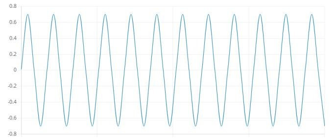
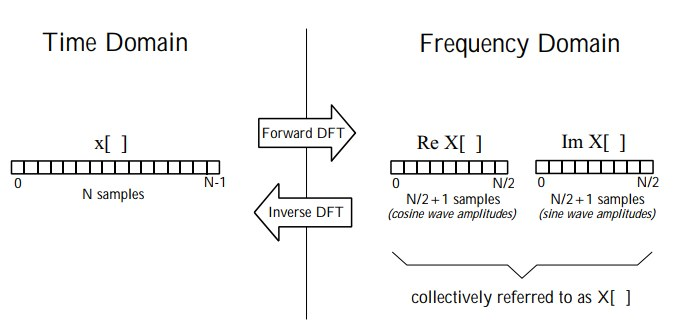
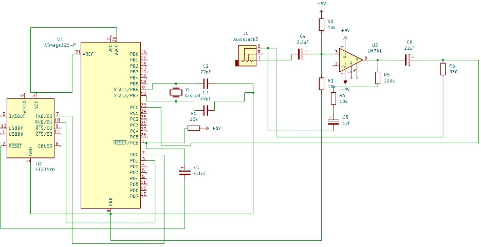
For the hardware stage, as shown in the methods section, the prototype had two main stages of building, that’s because Arduinos cannot be recycled: however, it’s easy to find their microcontroller for reuse. Therefore, by following the datasheet, a miniature Arduino development board was constructed. Capacitors (PH.2.05) were used as a way to provide an extremely stable 16MHz speed or oscillation (using the crystal oscillator) to increase the processing speed of the microcontroller without damaging it. They were also used in the amplification stage for signal attenuation and filtering by making high-pass filters whose cutoff frequencies depended on the capacitors and resistors, where fcutoff = 1/2πRC (MA.2.02). The resistors were wired in parallel (PH.2.04) to the capacitor. The chosen frequency to be attenuated was ≈ 16Hz. This had to be equal across all high-pass filters. This related to the accuracy design requirement as this boosted the accuracy and cancelled any low-frequency unwanted signal. The schematic for the entire prototype is shown in figure (4.03).
Further analysis showed that there was a consistent error as shown in figure (4.04), this was due to the limitations presented by the Nyquist frequency, which states that the maximum readable frequency is half of the sampling frequency (4000Hz) after 2000Hz, the accuracy decreases substantially. This sampling frequency is appropriate because the number of samples is 128.
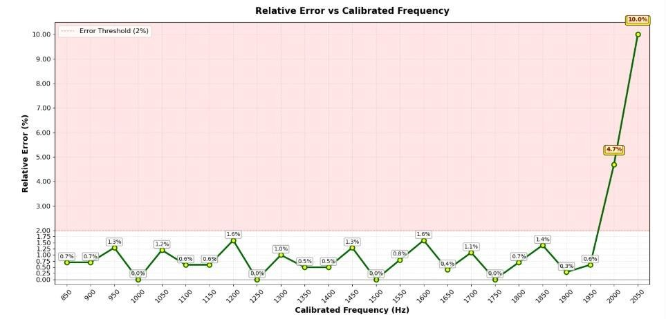
Regarding the entire prototype, its power consumption mostly relied on the ATMega328P because the AUX input had negligible current and voltage output. The ATMega328P pulled in a consistent 5V and a consistent maximum current of 200mA (PH.2.03), according to the law of power: P = IV, Therefore, the power consumption of the ATMega328 is exactly 1 watt maximum.
}
Conclusion
The Conclusion summarizes what the project ultimately demonstrated and answers the main question of whether the proposed solution was successful.
A strong Conclusion should generally follow 2-4 paragraphs:
- Return to the problem → State the purpose → Connect to Egypt’s Grand Challenges
Briefly remind the reader what problem the project addressed and which Grand Challenges it targets. Then state what the project aimed to accomplish. - Summarize the major results → Confirm the requirements
Mention only the most important findings that prove whether the prototype worked. Focus on results that directly relate to the design requirements. - Compare the solution to the prior solutions → Explain why it’s better
Briefly compare the selected solution with the major prior solutions discussed in the Introduction. Explain what your prototype offers differently, particularly in terms of cost, simplicity, accessibility, scalability, or other requirements. Do not repeat the entire comparison from the Introduction. - Final judgment → State what can be concluded
End with a clear statement about whether the proposed solution is a valid response to the problem. Explain what the results demonstrate and, if appropriate, what the prototype could contribute to real-life applications or future development.
Important:
The Conclusion should answer:
“So, after everything we built and tested, what did we actually prove?”
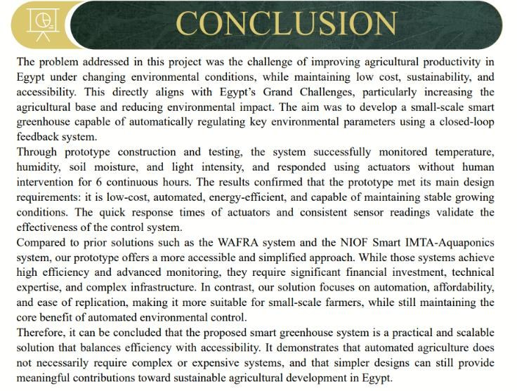
Conclusion
The problem addressed in this project was the challenge of improving agricultural productivity in Egypt under changing environmental conditions, while maintaining low cost, sustainability, and accessibility. This directly aligns with Egypt’s Grand Challenges, particularly increasing the agricultural base and reducing environmental impact. The aim was to develop a small-scale smart greenhouse capable of automatically regulating key environmental parameters using a closed-loop feedback system.
Through prototype construction and testing, the system successfully monitored temperature, humidity, soil moisture, and light intensity, and responded using actuators without human intervention for 6 continuous hours. The results confirmed that the prototype met its main design requirements: it is low-cost, automated, energy-efficient, and capable of maintaining stable growing conditions. The quick response times of actuators and consistent sensor readings validate the effectiveness of the control system.
Compared to prior solutions such as the WAFRA system and the NIOF Smart IMTA-Aquaponics system, our prototype offers a more accessible and simplified approach. While those systems achieve high efficiency and advanced monitoring, they require significant financial investment, technical expertise, and complex infrastructure. In contrast, our solution focuses on automation, affordability, and ease of replication, making it more suitable for small-scale farmers while still maintaining the core benefit of automated environmental control.
Therefore, it can be concluded that the proposed smart greenhouse system is a practical and scalable solution that balances efficiency with accessibility. It demonstrates that automated agriculture does not necessarily require complex or expensive systems, and that simpler designs can still provide meaningful contributions toward sustainable agricultural development in Egypt.
Recommendations
The Recommendations section explains how the project could be improved in the future and how the selected solution could become more practical for real-life use. Recommendations should not simply repeat things the team should have done during the project; instead, they should focus on future improvements that were not realistically achievable because of limitations such as cost, available equipment, time, safety, scale, or technical complexity.
ال Recommendations بتشرح إزاي المشروع ممكن يتطور ويتحسن في المستقبل، وإزاي الحل اللي اخترتوه ممكن يبقى أكثر عملية وقابل للتطبيق علي أرض الواقع.
المهم هنا إن الـRecommendations مش مجرد ليست بالحاجات اللي كان المفروض تعملوها أثناء المشروع, يعني متجيش تقول " كان المفروض نعمل فولان اكتر" و يلا عك بقى و خلاص, ركّز على تحسينات مستقبلية ماكانش واقعي إنكم تنفذوها بسبب limitations زي التكلفة، الأجهزة المتاحة، الوقت، الأمان، حجم الـPrototype، أو التعقيد التقني, كذلك.
Each recommendation should answer three questions:
- What should be improved?
Clearly state the specific improvement being proposed. - Why would it improve the project?
Explain what problem, limitation, or weakness it would solve and how it would make the prototype or real-life application better. - Why wasn't it done in this project?
Give a realistic reason why the team could not implement it, such as:
- High cost
- Lack of specialized equipment
- Limited time
- Limited access to materials
- Safety concerns
- Prototype scale
- Technical complexity
- Lack of sufficient testing conditions
A strong recommendation therefore follows this general pattern:
Future improvement → Benefit → Reason it was not implemented.
- إيه اللي محتاج يتحسن؟
حدد بالظبط التحسين اللي بتقترحه. - ليه التحسين ده هيخلي المشروع أحسن؟
اشرح المشكلة أو الـlimitation أو الـweakness اللي التحسين ده هيحلها، وإزاي هيخلي الـPrototype أو استخدام الحل في تطبيق أرض الواقع أفضل. - ليه معملتوش التحسين ده بنفسكم في المشروع؟
ادّي سبب منطقي يوضح ليه ماكانش ممكن تنفذوه وقتها، زي:
- التكلفة العالية
- مفيش أجهزة متخصصة متاحة
- الوقت كان محدود
- صعوبة الوصول للمواد المطلوبة في مصر
- مشاكل متعلقة بامان الطلاب
- حجم الـPrototype كان صغير
- التعقيد التقني
يعني من الاخر، الـRecommendation القوية بتمشي كده:
تحسين مستقبلي → فايدته → ليه ما اتنفذش في المشروع
As a tip, it is nice to start this section with a short introductory sentence explaining that the prototype demonstrated the feasibility of the selected solution but that further improvements could be implemented to either the prototype itself or its large-scale implementation, then, present 3–5 specific recommendations, preferably as bullet points.
Each recommendation should be concise but contain enough explanation to show why the improvement matters and why it was beyond the scope of the current project.
Tip صغير
حلو تبدأ ال recommendations بجملة قصيرة توضّح إن الـPrototype أثبت إن الحل قابل للتنفيذ من حيث المبدأ، لكن لسه ممكن يتعمله تحسينات، سواء في الـPrototype نفسه أو في تطبيقه على نطاق واسع علي أرض الواقع.
بعد كده، قدّم 3–5 Recommendations محددة، ويفضل تكون في شكل Bullet Points عشان تبقى سهلة في القراءة.
كل Recommendation تكون مختصرة، بس فيها شرح كفاية يوضح ليه التحسين ده مهم وليه كان خارج نطاق المشروع الحالي.
Examples of types of recommendations to consider
Prototype improvement:
Suggest a better component, stronger material, improved sensor, more accurate actuator, improved circuit, or more advanced control system.
Automation/control/viability:
Suggest improvements that would make the system more autonomous, responsive, or capable of adapting to different conditions.
Scaling:
Explain how the prototype could be adapted from a small demonstration into a larger mainstream application, and what infrastructure or technology would be needed, or a better location to implement it.
Economic/environmental improvement:
Recommend ways to reduce operating costs, material consumption, water usage, waste, or environmental impact.
Here is an example of a full recommendations section:
Recommendations
The experience gained throughout the construction of the prototype has necessitated the inclusion of specific recommendations for future improvement and sustainability. There have been many pitfalls during the earliest stages during the prototype building, and the following recommendations illustrate the correct steps and protocols needed in avoiding them. The recommendations are:
- Oscilloscopes are expensive and hard to come by in Egypt, but they are need to calculate the frequency and the power factor of the AC output, in order to determine the real power consumed from the current under the given load. This will help with correcting the power factor through choosing the correct capacitance of the capacitors after the full-bridge rectification using the diodes.
- Using microcontrollers and microchips such as Arduino-based chips, to take measurements and send real-time feedback of the water jet’s flow rate and velocity, the turbine’s RPM and the temperatures at the hot and cold junctions of the Peltier modules.
- The Toshka Lakes region presents an ideal environment for future deployment of a large-scale version of the prototype, as it offers both strong solar irradiance and a continuous freshwater source, making it perfect for activating both the hydroelectric and thermoelectric components of the system, additionally, choosing this location is strategic due to its remoteness and agricultural importance, making it a strong candidate for decentralized energy support in non-centralized areas of Egypt such as upper Egypt.
- For future large-scale applications, the system should be tested using more durable turbine materials and larger-scale water flow setups to reflect real environmental conditions. Since high efficiency thermoelectric modules and industrial-grade components were too costly for our prototype, they should be introduced gradually in the real-life application to boost performance. The design should also be adapted into a modular setup that allows for easier assembly and maintenance in rural areas. This would make the system more practical for real deployment without needing massive infrastructure.
Literature Cited
There isn’t much to say about this section. Here, you simply list the sources you used for the information you cited in the poster, formatted according to APA 7.
You should include at least 5 sources. However, make sure these are actually the sources you used in the poster, rather than just picking five random references from your Portfolio.
It’s also a good idea to vary your source types when possible. For example, you can use textbooks, reference books, academic journals, articles, and other reliable sources.
As usual, make sure your sources come from trusted and credible websites. Prefer sources with domains such as .edu, .org, .gov, .eu, or other official national or international domains when appropriate, and DO NOT include .com websites (some sites have a DUI for citing which makes them a little more credible. This includes research papers and journals).
الشغل هنا قليل, من الأخر بتكتب المصادر اللي استخدمتها للمعلومات اللي عملتلها citations جوه الـPoster، وبتكتبها بنظام APA 7
لازم يكون عندك على الأقل 5 مصادر. بس خد بالك، المصادر دي لازم تكون فعلاً اتستخدمت في الـPoster، مش مجرد إنك تختار 5 references عشوائيين من الـPortfolio وتحطهم هنا وخلاص.
ويُفضّل كمان إنك تنوّع أنواع المصادر لو تقدر. مثلاً ممكن تستخدم textbooks، reference books، academic journals، articles، ومصادر موثوقة تانية.
وكالعادة، اتأكد إن المصادر جاية من مواقع موثوقة وذات مصداقية. يفضّل استخدام مصادر من domains زي .edu، .org، .gov، .net، .eu أو أي domains رسمية لدول أو جهات دولية، حسب المصدر و ممنوع منعا باتا الاعتماد على مواقع .com العشوائية.
Acknowledgments
This section is optional and can be removed from the poster.
In this section, you basically credit/thank those who contributed to your project or helped you complete it. You can include people like your teachers, Capstone leader, fabrication lab engineer, principal, etc.
الجزء ده اختياري، وممكن تشيله من الـPoster.
في الجزء ده، ببساطة بتشكر وتذكر الأشخاص اللي ساهموا في مشروعك أو ساعدوك إنك تكمّله. ممكن تذكر مثلاً المدرسين، الـCapstone Leader، مهندس الـFabrication lab، الـPrincipal، وغيرهم من الأشخاص اللي ساعدوا في المشروع.
Here is a full example:
“For starters, all thanks are due to Allah SWT Who has given us all the abilities to work on this project. All thanks are also due to everyone who supported the project intangibly or tangibly, or with inductive information, such as Mr. Ahmed Ahmed (capstone general), Mr. Ahmed Ahmed (capstone leader), Mr. Ahmed Ahmed (capstone teacher), Mrs. Rana Ahmed (the FabLab engineer), and our dear colleagues who have all generously helped us with their knowledge, contributing to the success of this project, and all the staff of Ismailia STEM School.”
For Further Information:
This section is also optional and can be removed from the poster.
In this section, you can include personal contact information so that people interested in your project can reach you if they wish to. You can include the team members’ names, phone numbers, and school email addresses.
Note: Be careful when including your real phone number on the poster, especially if the poster will be displayed publicly. To reduce the risk of spam or unwanted calls, you can replace one or more digits with incorrect digits, or use another method to make the number non-functional. Include your real phone number at your own risk.
الجزء ده كمان اختياري، وممكن تشيله من الـPoster
في الجزء ده، بتحط بيانات التواصل عشان الناس المهتمة بالمشروع تقدر تتواصل معاكم لو حبت. ممكن تكتب أسماء أعضاء الفريق، أرقام التليفونات، وإيميلات المدرسة.
ملاحظة: خد بالك من إنك تحط رقم تليفونك الحقيقي على الـPoster، خصوصاً لو الـPoster هيكون معروض في مكان عام. عشان تقلل احتمالية الـspam أو المكالمات المزعجة، ممكن تغيّر رقم أو أكتر من رقم في الـphone number، أو تستخدم أي طريقة تخلي الرقم غير صالح للاستخدام, لو قررت تحط رقمك الحقيقي، فده على مسؤوليتك.